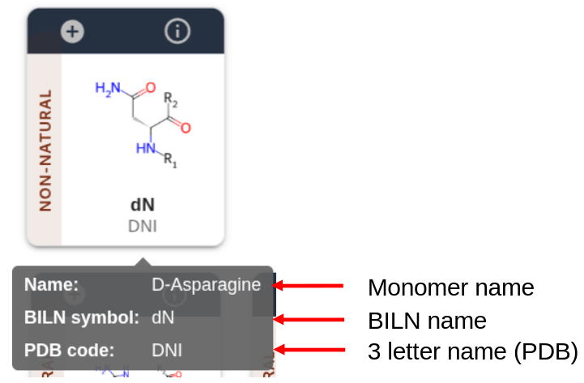
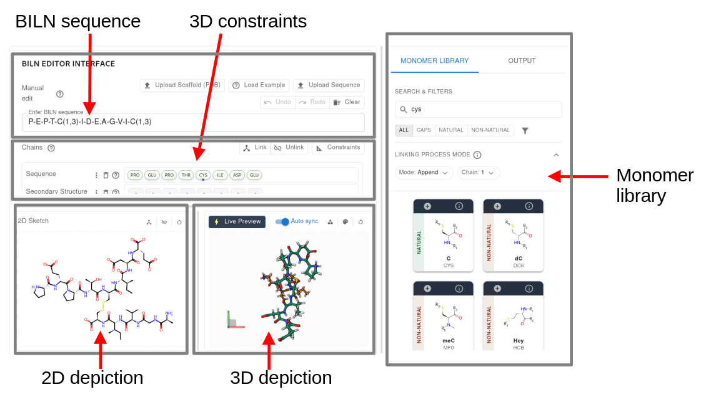
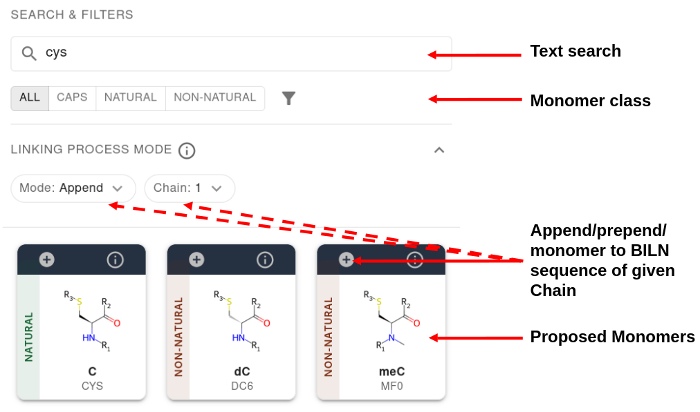
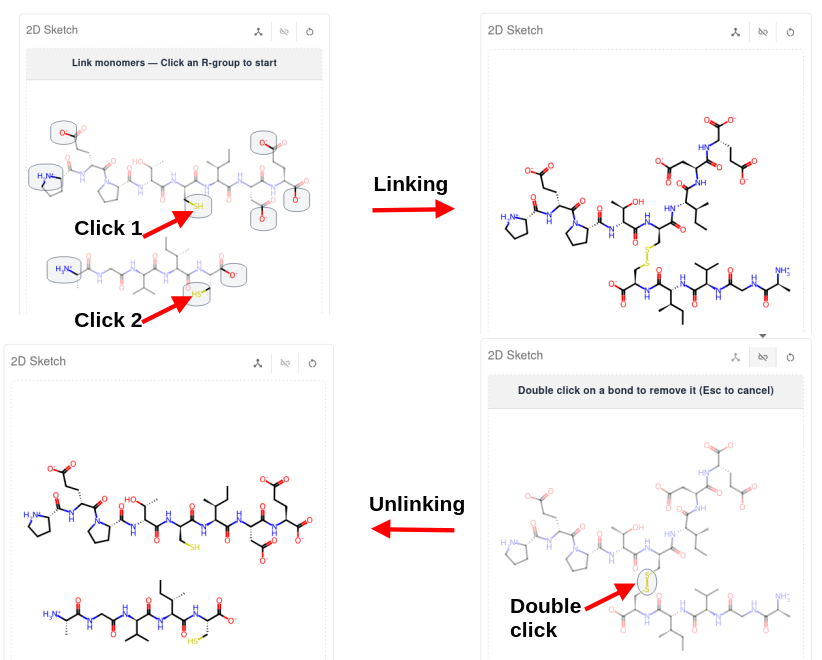
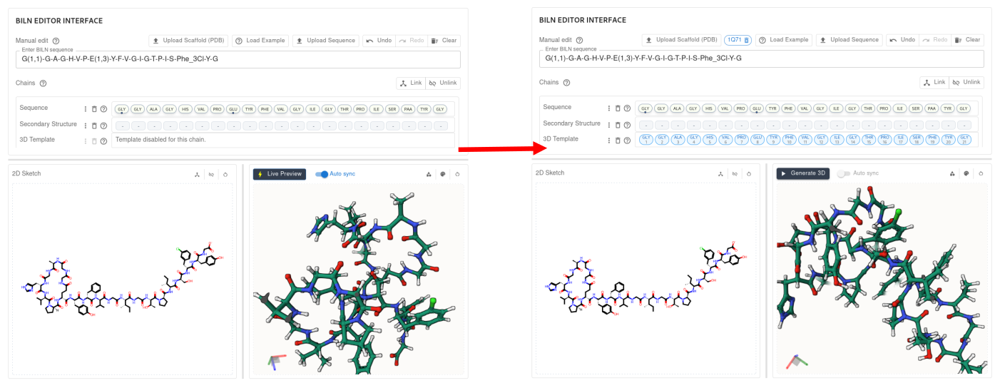

PEP-EDIT stands for the rapid on-line 1D (SMILES), 2D (SDF/MOL2) and 3D (PDB) preparation/generation of peptides inluding standard and non standard amino acids or groups. These can be used for further investigation of the peptides, including 3D modeling using AlphaFold3 (REF), or conformational sampling using molecular dynamics (REFS). The 3D conformations can be generated from scratch, or imposing structural constraints. It can also be used to edit the structures of peptides, modifying/substituting their amino-acids while preserving the input 3D conformation. Protonation is controlled depending on the pH.
Concepts:
PEP-EDIT elaborates upon the "Boehringer Ingelheim Line Notation" (BILN) system (REF), as implemented in the pyPept libray (REF). BILN comes with two main features:
- a library of monomers (e.g. amino-acids) that can be connected to others.
- a syntax to describe how monomers are connected to others.
The combination of the two makes it possible to describe complex peptides using a human readable notation. This section is a short introduction to the BILN format. For more details, please refer to (REF).
The monomer library.
The library contains monomers that can be combined to build a peptide. In PEP-EDIT, the monomers are categorized using different categories:
- Natural amino acids that correspond to the usual 20 L-amino acids.
- Non natural amino acids that encompass the D-amino acids and unusual amino acids such as the sarcosin, or the alpha-amino iso butyric acid, but also N-methylated amino acids and exotic amino acids such as the N-epsilon-tert-Boc-L-lysine, and many others.
- Caps: these correspond to special groups that can only be added as extremities of the main chain or side chains (see below).
- Each monomer in the library has a BILN label that can be used to combine it with other as a BILN sequence. For instance P for proline, am for amide, DOU for the D-ornithine, etc.
- Each monomer has identified connecting groups or R-groups. By default all amino acids have two R-groups, the first (R1) consisting of the N-terminal backbone nitrogen and the second (R2) the C-terminal carbonyl carbon. Extras connecting groups (R3, R4, ...) consist for instance of the sulfur atoms of the cysteine side chains that can form disulfide bonds. In practice, the number of R-groups is currently limited to 4.
- Caps are monomers that have only one R-group, and can only positionned at extremities.

Of note: in PEP-EDIT, each monomer has different labels: its full name, its BILN name (the only valid in a BILN sequence) and a 3 letter code for the 3D representation in the PDB format.
Currently, PEP-EDIT comes with a library of 20 standard amino acids, 255 non standard amino acids and 53 caps. Furthermore, it is possible to extend the library on-line (see below).
Complex peptides as a monomer assembly:
- Describing the way monomers are connected can be done in the following form: P(1,2).E(1,1)(2,2).K(2,1) for the peptide PEK.
- Monomers are associated with their connecting information and are separated by '.'. Pairs within parentheses describe the connections.
- In P(1,2) the "1" stands for connection 1 and the "2" denotes a connection using R2 (the carbonyl).
- In E(1,1)(2,2), (1,1) stand for connection 1 using R1 (the nitrogen), and (2,2) stands for connection 2 using R2 (the carbonyl).
- Finally, in K(2,1), connection 2 is closed using the lysine R1 (the nitrogen).
- The description of the connectivity related to the amino-bonds can be simplified suing the "-" sign. For instance:
- P-E-P-T-I-D-E means a peptide of sequence PEPTIDE.
- P-E-P-T-I-D-E.A-N-D_Orn-T-H-E-R means two disconnected peptides, the first of sequence PEPTIDE and the second of sequence AN-DOU-THER, where D_Orn stands for the D-ornithine.
- Consequently, if a monomer label contains a '-' then its name must be enclsed by brackets. For instance if a nomomer is named 2-Cl-TYR, then it must be specified as [2-Cl-TYR] in the biln sequence: A-[2-Cl-TYR]-A
- Taking advantage of the simplified notation, more complex peptides can be noted in a simple manner.
- P-E-P-T-C(1,3)-I-D-E.A-G-V-I-C(1,3): in this example, the syntax defines a bond labelled 1 between the R-group number 3 of the cysteine (the sulfur) of the first pepidic chain of sequence PEPTCIDE and that of the cysteine of the second peptidic chain of sequence AGVIC.
- A concrete example: semaglutide: H-Aib-E-G-T-F-T-S-D-V-S-S-Y-L-E-G-Q-A-A-K(1,3)-E-F-I-A-W-L-V-R-G-R-G.SemaB(1,2)
- ACE (ac) can be added to the N-extremity or a peptide or NH2 (am) to its C-extremity. E.g.: ac-K-L-am for the KL peptide both acetylated and amidated.
PEP-EDIT: complex peptide design based on a monomer library
PEP-EDIT consists of two facilities. The first one "Peptide 1D/2D/3D generation" is related to the interactive generation of 1D/2D/3D representations of a peptide specified using the BILN syntax. This facility stands for the generation of 1D/2D/3D initial generation of complex peptides involving standard and non standard amino acids, linear and branched peptides, linear or cyclized peptides, etc. This facilities relies on a second one, the "Monomer library management" which is related to the library of monomers available to build peptides, and defining new monomers to add to the library. Virtually, the combination of these two facilities enables the generation of initial setup of 1D/2D/3D representation for close to abny king of peptide or peptidomimmetic providing both a mechamism to build a complex peptides as a combination of monomers and a mechanism to define new monomers.
The PEP-EDIT user interface for complex peptide 1D/2D/3D generation

The BILN editor interace consists of several sections:
- a section describing the BILN sequence in use
- a section to specify 3D constraints
- a section to depict the current BILN sequence in 2D
- a section to depict the current BILN sequence in 3D
- a section related to the monomer library
Editing a BILN sequence
The main entry point to generate a peptide consists of the text field defining the BILN sequence (upper left of the interface). It can be filled manually entering a BILN sequence or by clicking the monomers of the library depicted on the right part of the interface. This library section comes with tools to search the monomers, depending on their class (CAPS, NATURAL or NON-NATURAL) or using a text search to identify relevant monomers. For instance, entering "cys" will filter the monomer library to present only monomers having the "cys" text in their names, resulting in presenting 9 monomers, including for instance the D-cysteine, the homocysteine or the selenocysteine.

Once a monomer of interest identified, it is possible to directly use its BILN name in the BILN sequence text field or to add it to one sequence by clicking the "+" sign on the top left of the monomer. Depending on the "Mode" selected, the monomer will be added either at the end (Append), the beginning (Prepend) or will be used to start a new peptidic entity entitled New chain in PEP-EDIT. All these operations support an undo redo mechanism (icons on the top of the editor).
Note that the definition of the BILN sequence is associated with the synchronous 2D and 3D depictions of the peptidic chains. In some cases, the generation of the 3D conformation can take some time. To keep the process as interactive as possible, it is possible to disable the automatic updating the 3D depiction.
Linking two chains

It is possible to link monomers directly for the BILN text field, or graphically, clicking the "link" button. Once clicked on, the 2D depiction will show the groups that are available to generate a bond. In the example below, clicking the SH groups of two cysteines will result in the formation on a disulfide bond. It is possible to unlink two monomers clinkg the unlink button and double clicking the bond to disrupt. Note that this is only effective to unlink groups that do not correspond to amine bonds, i.e. involve R-groups other than 1 and 2. Also note that the linking mechanism comes with no control about if the link creation is meaningful.
Imposing 3D conformation constraints
It is possible to impose conformationnal constraints to the 3D generator. The area in the middle of the BILN editor interface contains a summary of the chains entered in the BILN sequence text field. For sake of clarity, the amino acids are here denoted using a 3 letter code that may differ from thei BILN names.
- Secondary structure: Each amino acid of each chain can be associated with a local conformation, one of H (helical), E (extended) or C (coil), '-' meaning no constraint. Once specified, the constraints are passed to the 3D generator and propagated to the 3D coordinates. Note that the constraints are applied based on interatomic distance, not phi psi angle values, to preserve the compatibility with exotic amino acids, making teh helical and extended conformation approximate only. For more exact backbonbe constraints, it is preferable to use a 3D template.
- 3D template: It is possible to impose a backbone conformation by loading a PDB file. The PDB file can be a user file or it can be fetched directly from the PDB by specifying its PDB identifier (e.g. 1uao). The rules to apply the constraints are as follows:
- The backbone coordinates of the first residue of the template are mapped onto the first residue of the first chain, then the second, then the third, etc. It is possible to change the mapping by using the "Configure 3D template" option in the "3D template menu" (accessible clicking on the 3 vertical dots icon).
- If several chains are present, the same process is applied to each. It can thus be necessary to adjust/clear the mapping for some chains.
- To avoid unnecessary delays due to the 3D refresh of the peptide, the 3D syncrhonization is disabled. It is necessary to ask for its generation by clicking the "Generate 3D" button.
Output
The outuput section gives access to the 1D (SMILES, HELM, BILN), 2D (SDF) and 3D (SDF, PDB) representations of the peptide. Note that contrarily to the 2D sketch of the BILN editor section, where hydrogens other than that of the main chain are only implicit, the protonation is here set for pH 7.4.
The Monomer editor
In order to preserve its ability to evolve, PEP-EDIT also comes with a possibility to add new monomers to the library, in a moderated manner.
The process includes 5 steps:
- The monomer should be described as a smiles. Protonation details are not required at this stage. Alternatively, a CHEMBL identifier can be specified to automatically search the SMILES
- In a second step, the user has to identify wich are the R-groups. To this aim, the user has to select one or more bonds to be broken.
- The molecule is then displayed as two fragments or more, and the user has to select the fragment that will correspond to the monomer after linking.
- This done, the user must detail the name of the monomer, its BILN label, the 3 lettre code for the PDB format. If it is an amino acid, a natural analog can be given.
- A FINIR
Use cases:
Microcin J25

The microcin J25 (mccJ25) is a LASSO peptide of sequence:
>1Q71_1|Chain A|microcin J25|Escherichia coli (562)
GGAGHVPEYFVGIGTPISFYG
It has side chain to backbone ring structure due a bond between the side-chain of GLU 8 and the backbone of the N-terminal GLY.
We wish to generate the 3D structure of a variant in which PHE 19 is substituted with a 3-chloro-L-PHE (BILN: Phe_3Cl).
From the amino acid sequence of MccJ25, it is simple to genetate a BILN sequence, substitute PHE 19 and generate the cyclization. Unfortunately however, the 3D builder will not allow the C-terminal part entre the ring and form the LASSO. This can be solved simply by using the 3D template facility. The PDB identifier 1q71 is used as a 3D template resulting in the LASSO conformation.
Generating a starting conformation for the semaglutide
The semaglutide has an amino acid sequence (BILN format):
H-Aib-E-G-T-F-T-S-D-V-S-S-Y-L-E-G-Q-A-A-K-E-F-I-A-W-L-V-R-G-R-G
to which a fatty diacid (1,18-octadecanedioic acid) is linked on K20, that exists in the PEP-EDIT monomer library with the name "SemaB"
PEP-EDIT enables to rapidly generate an initial conformation for this entity by entering the BILN sequence:
H-Aib-E-G-T-F-T-S-D-V-S-S-Y-L-E-G-Q-A-A-K-E-F-I-A-W-L-V-R-G-R-G.SemaB
then linking SemaB to K20.
however, the conformaùtion generated by PEP-EDIT alone is not realistic. It is possible to use PEP-FOLD4 to generate a conformation for the residues 3-31 and to use it as a template to generate the full structure of the semaglutide. NOT WORKING.
Cyclic peptide including both L- and D- amino acids
Head-to-tail octapeptidewith standard amino acids, BILN sequence G(1,1)-T-V-A-V-Q-F-L(1,2)
Head-to-tail octapeptide with 3 D-amino acids, BILN sequence: D(1,1)-D-P-T-dP-dR-Q-dQ(1,2)
Head-to-tail octapeptide with 4 D-amino acids, BILN sequence: dR(1,1)-Q-dP-dQ-R-dE-P-Q(1,2)